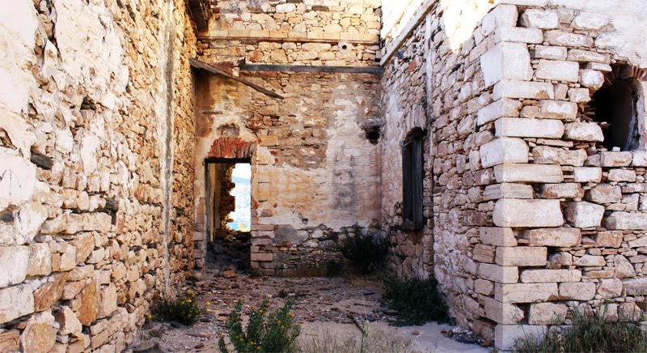

Syros: Lazaretta
Sat May 01 --:--:-- -- 2010
Next to the Eastern Telegraph Company building lay the ruins of "Limokathartirio"; a large complex, constructed in 1839 by the Bavarian architect & painter, Wilhelm von Weiler. Weiler was also the architect of the Old Military Hospital in Athens, constructed earlier in 1834. The Lazaretta/Limokathartirio building in Syros is considered to be Weiler's masterpiece. Initially, the complex was used as Quarantine until the late 19th century.
The main part of the building consists of 32 rooms (all equipped with a kitchen, wash area and lavatory), in which mainly Eastern travelers would be required to stay for a minimum of 7 days "clearing period" before entering Ermoupoli.
Until the late 19th century, this clearing period was implemented as a measure to protect the local population of Syros from major diseases of the time, such as the deadly cholera pandemics. From 1908, the complex was used as an asylum for the insane. And later still, up until 1961, used as a prison holding political prisoners en-route to be expelled to deserted islands.
The building has been divided up according to function (Quarantine, Asylum, Prison). It is possible to identify the purpose of each area by looking at the colour of the walls. Saffron is the quarantine area, while Red is the Asylum area and Grey, the prison.
It is difficult to find any specific historical events (although there must be many) related to the occupants of the building. Although, through a little searching, it is apparent that a Greek priest, intellectual & revolutionary (Theophilos Kairis) died in the building (assuming the building was also a prison at the time) on the 10th January, 1853.

In modern Greek history, Theophilos Kairis (b. 1784) is an important figure. On the 10th May, 1821 he declared the War of Independence by raising the Greek flag on the island of Andros (See wikipedia article). He also imported revolutionary thinking, such as western science & liberalism in to Greece and is notably credited with introducing the first telescope to Greece.
Despite this, his "radical" ideas did not impress the Greek Orthodox Church. Consequently, the never ending obstacle of rational thought that is - The Church -, declared him as a heretic & sent him to Syros for trial. Theophilos Kairis, along with his collaborators were tried on the 21st December 1852 in Ermopoli, where he was sentenced to 2 years imprisonment. Being 68 years old and frail, he perished after only 10 days of imprisonment in the Lazaretta building.
He was buried without any ceremony in the yard of the building; Later, priest's, along with followers of the church, desecrated his grave by exhuming his body, cutting open his belly and stuffing it with Lime in protest of his "heresy".
Off topic note: according to this reference, the desecration happened as above - I find this a little hard to believe. It is known that Theophilos Kairis died of "natural causes" - after only 10 days in prison. He died in a time of plague & disease, he was buried without ceremony, and further still, in a building which was also used as quarantine. If these facts are taken into consideration, along with the strange use of Lime, I believe: Lime (Quick lime / powder - Calcium Oxide), in times of plague, has historically been used to cover corpses. This is because calcium oxide/lime speeds up the decomposition process, thereby minimising the risk of disease to the living population. Lime, in it's raw form, was also used to mask the smell of death. Given this, it's more probable that since he perished of "natural causes", it may have been suspected that he died of sickness, and had to be buried quickly - hense the lack of ceremony.
It's a fascinating structure, with a strange, and as is the case with Theophilos Kairis; a dark history. Unfortunately, many of the red brick arches have become the victim of developers (one of whom is known locally as "The Dragon") who have apparently removed many bricks by hammering away at the building under the cover of night in order to build fireplaces in modern day homes.
In 1976, a developer removed over 50 bricks from von Weiler's masterpiece to be used in reinforced concrete for a patio for a holiday villa in the nearby village of Finika. Subsequently, the magnificent arches at the front of the building collapsed. Soon after this, in 1978, the Greek state recognised the building as an official monument; although since then, it has been left to ruin. More unfortunate are the plans to use the site as a casino :( -- I believe this to be a shame, given the site's notable architecture and its importance in modern Greek history.